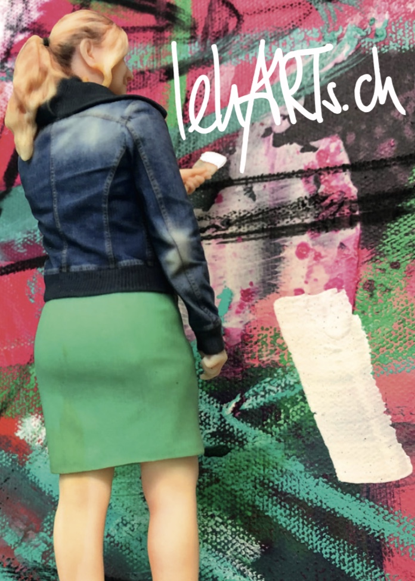
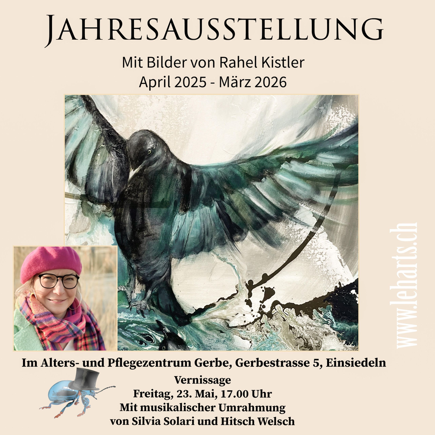

*Kuratierte Ausstellungen
-
März 2026 - Mai 2026:
Jahresausstellung Verein Kunst Schwyz Morschach*
-
April 2025 - März 2026:
Jahresausstellung Einsiedeln

-
März 2024 - März 2025:
Jahresausstellung MedicoPlus art, Einsiedeln
-
11. Mai 2024 - 26 . Mai 2024
Ausstellung Verein Kunst Schwyz/Pfäffikon
-
Oktober 2024 - Ende Jahr 2024:
Kunstausstellung GartenBISTRO Näfels
-
November 2022:
„Natürlich Kunst“ im Bahnhof Bäch vom
Die Kulturkommission Freienbach lädt zu einem surrealen Spaziergang durch die Natur ein. Die beiden Ausserschwyzer Künstler Rahel Kistler und Richard Cantieni präsentieren ihre Werke ab Freitag im Kulturhaus in Bäch.
„Natürlich Kunst“: So schnörkellos wie der Titel der Kunstausstellung sind auch die Skulpturen und Bilder der Wangner Künstlerin Rahel Kistler und des Wiler Künstlers Richard Cantieni. Unter dem Patronat der Kulturkommission der Gemeinde Freienbach stellen die beiden eine Auswahl ihrer Werke vom 25. November bis 10. Dezember im Kulturhaus (Bahnhof) Bäch aus. Die Vernissage mit musikalischer Begleitung ist am Freitagabend von 18 bis 21 Uhr. Die Besucher der Ausstellung erwartet ein surrealer Sparziergang durch die Natur. Der Höfner Cantieni und die Märchlerin Kistler finden ihre Inspiration und die Materialien für ihre Kunst in der freien Natur – zumindest teilweise.

-
Juni 2022:
3D Street Art in Zusammenarbeit mit Eduardo Relero in Lachen
-
April 2022:
Jahresausstellung Verein Kunst Schwyz, Pfäffikon*
-
Juni 2021:
Jahresausstellung Verein Kunst Schwyz, Siebnen
-
März 2021:
Swissphotoclub, Zürich*
-
Oktober 2020:
Arttalents Zürich
-
August 2020:
Artbox/Project Zürich 2.0*